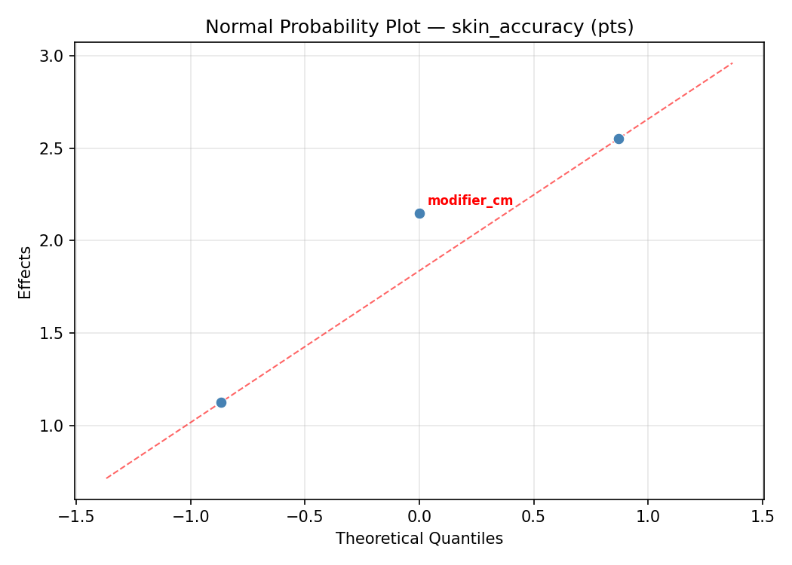
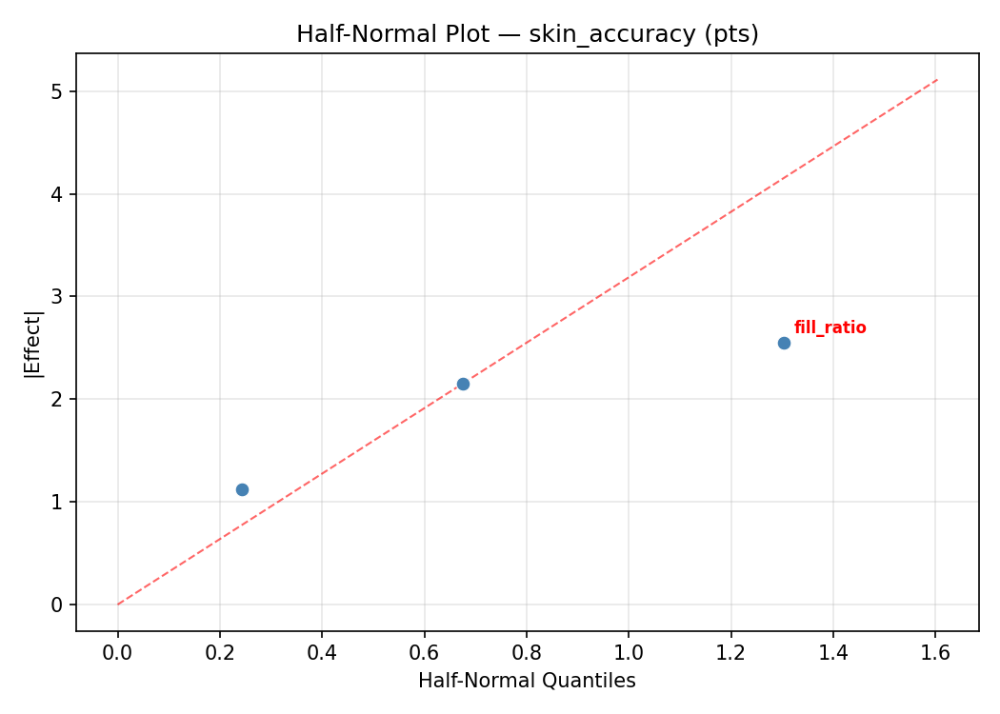
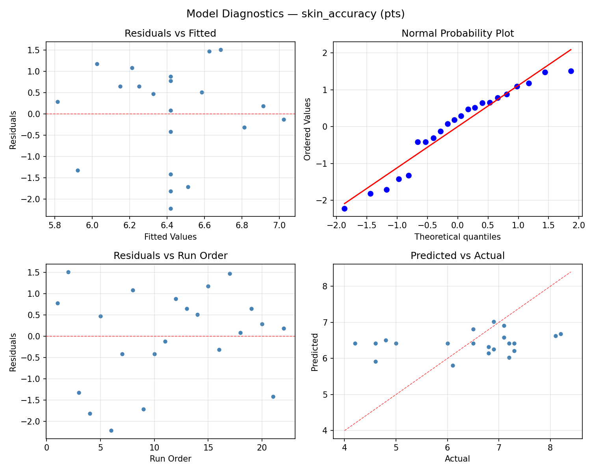
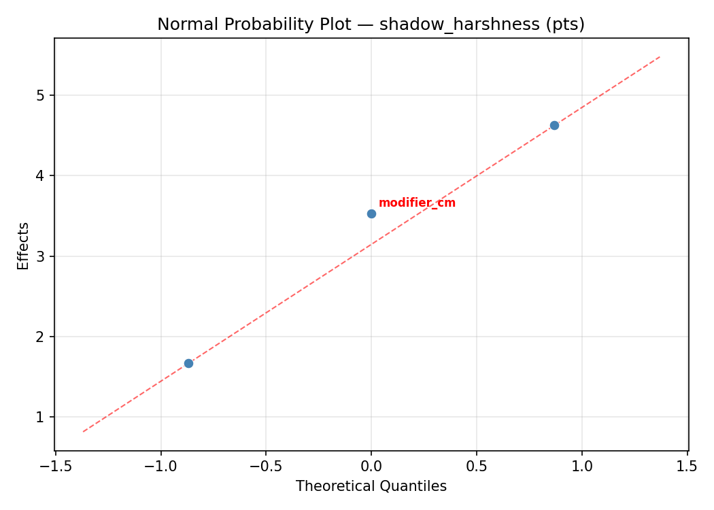
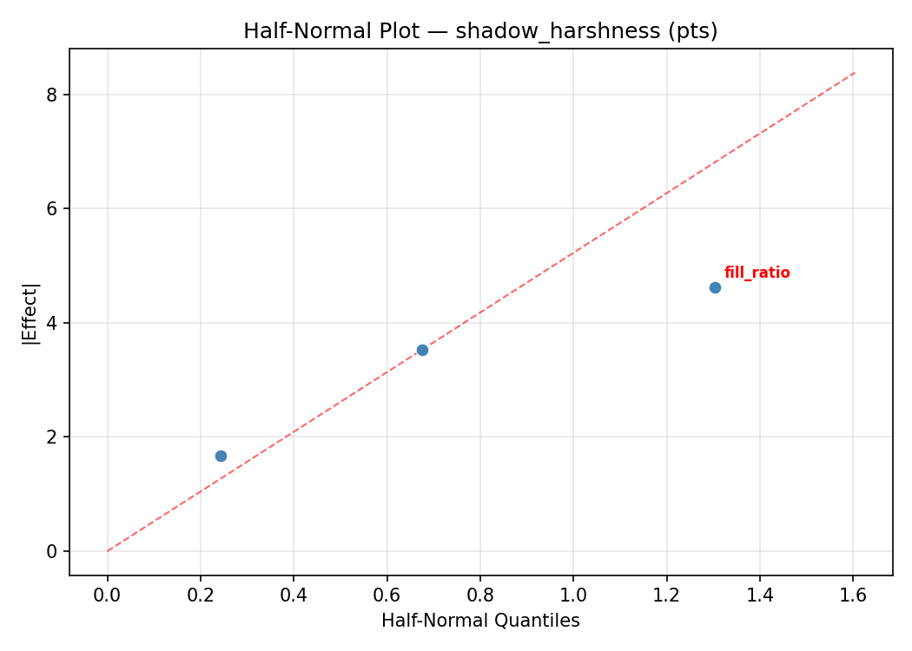
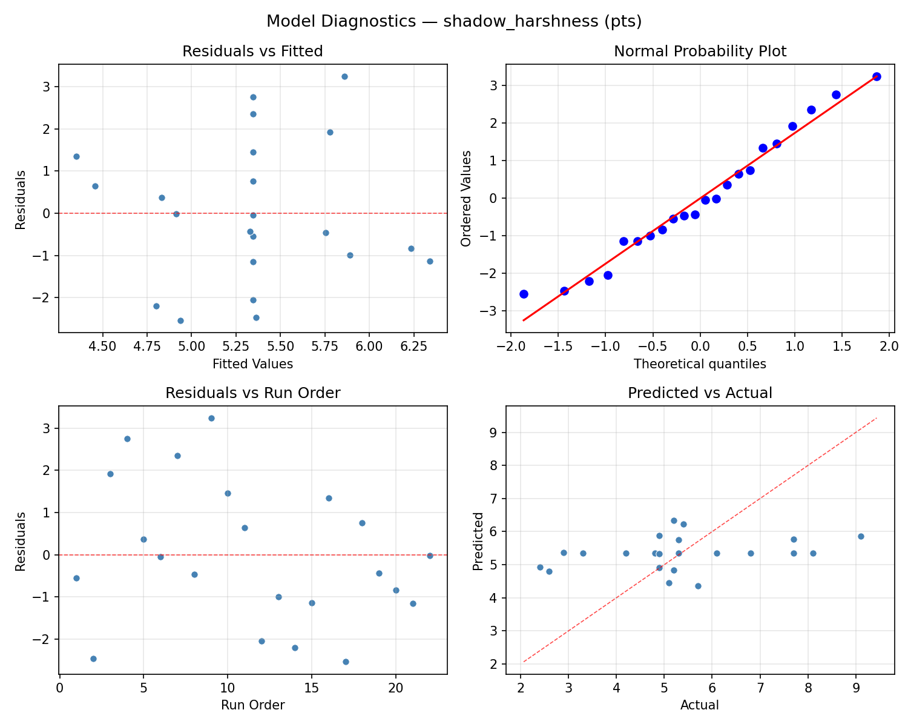

Summary
This experiment investigates studio portrait lighting. Central composite design to maximize skin tone accuracy and minimize harsh shadows by tuning key light power, fill ratio, and modifier size.
The design varies 3 factors: key power ws (Ws), ranging from 100 to 500, fill ratio (ratio), ranging from 2 to 8, and modifier cm (cm), ranging from 60 to 150. The goal is to optimize 2 responses: skin accuracy (pts) (maximize) and shadow harshness (pts) (minimize). Fixed conditions held constant across all runs include background = grey, distance m = 2.
A Central Composite Design (CCD) was selected to fit a full quadratic response surface model, including curvature and interaction effects. With 3 factors this produces 22 runs including center points and axial (star) points that extend beyond the factorial range.
Quadratic response surface models were fitted to capture potential curvature and factor interactions. The RSM contour plots below visualize how pairs of factors jointly affect each response.
Key Findings
For skin accuracy, the most influential factors were modifier cm (52.8%), key power ws (24.6%), fill ratio (22.6%). The best observed value was 8.2 (at key power ws = 300, fill ratio = 5, modifier cm = 105).
For shadow harshness, the most influential factors were fill ratio (47.6%), modifier cm (29.1%), key power ws (23.3%). The best observed value was 2.4 (at key power ws = 100, fill ratio = 2, modifier cm = 150).
Recommended Next Steps
- Run confirmation experiments at the predicted optimal settings to validate the model.
- Consider whether any fixed factors should be varied in a future study.
Experimental Setup
Factors
| Factor | Low | High | Unit |
|---|
key_power_ws | 100 | 500 | Ws |
fill_ratio | 2 | 8 | ratio |
modifier_cm | 60 | 150 | cm |
Fixed: background = grey, distance_m = 2
Responses
| Response | Direction | Unit |
|---|
skin_accuracy | ↑ maximize | pts |
shadow_harshness | ↓ minimize | pts |
Configuration
{
"metadata": {
"name": "Studio Portrait Lighting",
"description": "Central composite design to maximize skin tone accuracy and minimize harsh shadows by tuning key light power, fill ratio, and modifier size"
},
"factors": [
{
"name": "key_power_ws",
"levels": [
"100",
"500"
],
"type": "continuous",
"unit": "Ws"
},
{
"name": "fill_ratio",
"levels": [
"2",
"8"
],
"type": "continuous",
"unit": "ratio"
},
{
"name": "modifier_cm",
"levels": [
"60",
"150"
],
"type": "continuous",
"unit": "cm"
}
],
"fixed_factors": {
"background": "grey",
"distance_m": "2"
},
"responses": [
{
"name": "skin_accuracy",
"optimize": "maximize",
"unit": "pts"
},
{
"name": "shadow_harshness",
"optimize": "minimize",
"unit": "pts"
}
],
"settings": {
"operation": "central_composite",
"test_script": "use_cases/148_studio_lighting/sim.sh"
}
}
Experimental Matrix
The Central Composite Design produces 22 runs. Each row is one experiment with specific factor settings.
| Run | key_power_ws | fill_ratio | modifier_cm |
|---|
| 1 | 300 | 5 | 105 |
| 2 | 500 | 2 | 150 |
| 3 | 100 | 8 | 60 |
| 4 | 300 | 10.4772 | 105 |
| 5 | 300 | 5 | 105 |
| 6 | -65.1484 | 5 | 105 |
| 7 | 300 | 5 | 22.8416 |
| 8 | 300 | 5 | 105 |
| 9 | 500 | 8 | 60 |
| 10 | 665.148 | 5 | 105 |
| 11 | 300 | 5 | 105 |
| 12 | 300 | -0.477226 | 105 |
| 13 | 300 | 5 | 105 |
| 14 | 100 | 2 | 150 |
| 15 | 300 | 5 | 105 |
| 16 | 500 | 2 | 60 |
| 17 | 300 | 5 | 187.158 |
| 18 | 500 | 8 | 150 |
| 19 | 300 | 5 | 105 |
| 20 | 100 | 2 | 60 |
| 21 | 100 | 8 | 150 |
| 22 | 300 | 5 | 105 |
Step-by-Step Workflow
1
Preview the design
$ python doe.py info --config use_cases/148_studio_lighting/config.json
2
Generate the runner script
$ python doe.py generate --config use_cases/148_studio_lighting/config.json \
--output use_cases/148_studio_lighting/results/run.sh --seed 42
3
Execute the experiments
$ bash use_cases/148_studio_lighting/results/run.sh
4
Analyze results
$ python doe.py analyze --config use_cases/148_studio_lighting/config.json
5
Get optimization recommendations
$ python doe.py optimize --config use_cases/148_studio_lighting/config.json
6
Multi-objective optimization
With 2 competing responses, use --multi to find the best compromise via Derringer–Suich desirability.
$ python doe.py optimize --config use_cases/148_studio_lighting/config.json --multi
7
Generate the HTML report
$ python doe.py report --config use_cases/148_studio_lighting/config.json \
--output use_cases/148_studio_lighting/results/report.html
Features Exercised
| Feature | Value |
|---|
| Design type | central_composite |
| Factor types | continuous (all 3) |
| Arg style | double-dash |
| Responses | 2 (skin_accuracy ↑, shadow_harshness ↓) |
| Total runs | 22 |
Analysis Results
Generated from actual experiment runs using the DOE Helper Tool.
Response: skin_accuracy
Top factors: modifier_cm (52.8%), key_power_ws (24.6%), fill_ratio (22.6%).
ANOVA
| Source | DF | SS | MS | F | p-value |
|---|
| Source | DF | SS | MS | F | p-value |
| key_power_ws | 4 | 2.1961 | 0.5490 | 0.413 | 0.7952 |
| fill_ratio | 4 | 2.2652 | 0.5663 | 0.426 | 0.7864 |
| modifier_cm | 4 | 5.7486 | 1.4371 | 1.082 | 0.4206 |
| Lack | of | Fit | 2 | 7.5841 | 3.7921 |
| Pure | Error | 7 | 9.2988 | | |
| Error | 9 | 16.8829 | 1.3284 | | |
| Total | 21 | 27.0927 | 1.2901 | | |
Pareto Chart

Main Effects Plot

Normal Probability Plot of Effects

Half-Normal Plot of Effects

Model Diagnostics

Response: shadow_harshness
Top factors: fill_ratio (47.6%), modifier_cm (29.1%), key_power_ws (23.3%).
ANOVA
| Source | DF | SS | MS | F | p-value |
|---|
| Source | DF | SS | MS | F | p-value |
| key_power_ws | 4 | 7.3579 | 1.8395 | 0.687 | 0.6188 |
| fill_ratio | 4 | 17.8970 | 4.4743 | 1.671 | 0.2396 |
| modifier_cm | 4 | 9.1179 | 2.2795 | 0.851 | 0.5274 |
| Lack | of | Fit | 2 | 11.1617 | 5.5809 |
| Pure | Error | 7 | 18.7400 | | |
| Error | 9 | 29.9017 | 2.6771 | | |
| Total | 21 | 64.2745 | 3.0607 | | |
Pareto Chart

Main Effects Plot

Normal Probability Plot of Effects

Half-Normal Plot of Effects

Model Diagnostics

Response Surface Plots
3D surfaces fitted with quadratic RSM. Red dots are observed data points.
shadow harshness fill ratio vs modifier cm

shadow harshness key power ws vs fill ratio

shadow harshness key power ws vs modifier cm

skin accuracy fill ratio vs modifier cm

skin accuracy key power ws vs fill ratio

skin accuracy key power ws vs modifier cm

Multi-Objective Optimization
When responses compete, Derringer–Suich desirability finds the best compromise.
Each response is scaled to a 0–1 desirability, then combined via a weighted geometric mean.
Overall Desirability
D = 0.9408
Per-Response Desirability
| Response | Weight | Desirability | Predicted | Dir |
|---|
skin_accuracy |
1.5 |
|
8.10 0.9318 8.10 pts |
↑ |
shadow_harshness |
1.0 |
|
2.40 0.9545 2.40 pts |
↓ |
Recommended Settings
| Factor | Value |
|---|
key_power_ws | 300 Ws |
fill_ratio | 5 ratio |
modifier_cm | 105 cm |
Source: from observed run #17
Trade-off Summary
Sacrifice = how much worse than single-objective best.
| Response | Predicted | Best Observed | Sacrifice |
|---|
shadow_harshness | 2.40 | 2.40 | +0.00 |
Top 3 Runs by Desirability
| Run | D | Factor Settings |
|---|
| #2 | 0.9268 | key_power_ws=500, fill_ratio=8, modifier_cm=60 |
| #14 | 0.7864 | key_power_ws=300, fill_ratio=10.4772, modifier_cm=105 |
Model Quality
| Response | R² | Type |
|---|
shadow_harshness | 0.1504 | linear |
Full Multi-Objective Output
============================================================
MULTI-OBJECTIVE OPTIMIZATION
Method: Derringer-Suich Desirability Function
============================================================
Overall desirability: D = 0.9408
Response Weight Desirability Predicted Direction
---------------------------------------------------------------------
skin_accuracy 1.5 0.9318 8.10 pts ↑
shadow_harshness 1.0 0.9545 2.40 pts ↓
Recommended settings:
key_power_ws = 300 Ws
fill_ratio = 5 ratio
modifier_cm = 105 cm
(from observed run #17)
Trade-off summary:
skin_accuracy: 8.10 (best observed: 8.20, sacrifice: +0.10)
shadow_harshness: 2.40 (best observed: 2.40, sacrifice: +0.00)
Model quality:
skin_accuracy: R² = 0.2833 (linear)
shadow_harshness: R² = 0.1504 (linear)
Top 3 observed runs by overall desirability:
1. Run #17 (D=0.9408): key_power_ws=300, fill_ratio=5, modifier_cm=105
2. Run #2 (D=0.9268): key_power_ws=500, fill_ratio=8, modifier_cm=60
3. Run #14 (D=0.7864): key_power_ws=300, fill_ratio=10.4772, modifier_cm=105
Full Analysis Output
=== Main Effects: skin_accuracy ===
Factor Effect Std Error % Contribution
--------------------------------------------------------------
modifier_cm 2.5750 0.2422 52.8%
key_power_ws 1.2000 0.2422 24.6%
fill_ratio 1.1000 0.2422 22.6%
=== ANOVA Table: skin_accuracy ===
Source DF SS MS F p-value
-----------------------------------------------------------------------------
key_power_ws 4 2.1961 0.5490 0.413 0.7952
fill_ratio 4 2.2652 0.5663 0.426 0.7864
modifier_cm 4 5.7486 1.4371 1.082 0.4206
Lack of Fit 2 7.5841 3.7921 2.855 0.1240
Pure Error 7 9.2988 1.3284
Error 9 16.8829 1.3284
Total 21 27.0927 1.2901
=== Summary Statistics: skin_accuracy ===
key_power_ws:
Level N Mean Std Min Max
------------------------------------------------------------
-65.1484 1 6.0000 0.0000 6.0000 6.0000
100 4 6.6000 1.2728 5.0000 8.1000
300 12 6.1917 1.0799 4.2000 7.3000
500 4 6.8250 1.5500 4.6000 8.2000
665.148 1 7.2000 0.0000 7.2000 7.2000
fill_ratio:
Level N Mean Std Min Max
------------------------------------------------------------
-0.477226 1 6.0000 0.0000 6.0000 6.0000
10.4772 1 7.1000 0.0000 7.1000 7.1000
2 4 6.5000 1.0614 5.0000 7.3000
5 12 6.2000 1.0880 4.2000 7.3000
8 4 6.9250 1.6761 4.6000 8.2000
modifier_cm:
Level N Mean Std Min Max
------------------------------------------------------------
105 12 6.3667 0.9948 4.2000 7.3000
150 4 6.2500 1.7137 4.6000 8.1000
187.158 1 6.5000 0.0000 6.5000 6.5000
22.8416 1 4.6000 0.0000 4.6000 4.6000
60 4 7.1750 0.7411 6.5000 8.2000
=== Main Effects: shadow_harshness ===
Factor Effect Std Error % Contribution
--------------------------------------------------------------
fill_ratio 5.1000 0.3730 47.6%
modifier_cm 3.1250 0.3730 29.1%
key_power_ws 2.5000 0.3730 23.3%
=== ANOVA Table: shadow_harshness ===
Source DF SS MS F p-value
-----------------------------------------------------------------------------
key_power_ws 4 7.3579 1.8395 0.687 0.6188
fill_ratio 4 17.8970 4.4743 1.671 0.2396
modifier_cm 4 9.1179 2.2795 0.851 0.5274
Lack of Fit 2 11.1617 5.5809 2.085 0.1949
Pure Error 7 18.7400 2.6771
Error 9 29.9017 2.6771
Total 21 64.2745 3.0607
=== Summary Statistics: shadow_harshness ===
key_power_ws:
Level N Mean Std Min Max
------------------------------------------------------------
-65.1484 1 6.8000 0.0000 6.8000 6.8000
100 4 4.3000 1.4071 2.4000 5.7000
300 12 5.6083 1.8372 2.6000 9.1000
500 4 5.2750 2.1484 2.9000 8.1000
665.148 1 5.2000 0.0000 5.2000 5.2000
fill_ratio:
Level N Mean Std Min Max
------------------------------------------------------------
-0.477226 1 7.7000 0.0000 7.7000 7.7000
10.4772 1 2.6000 0.0000 2.6000 2.6000
2 4 5.0000 0.6481 4.2000 5.7000
5 12 5.7500 1.5091 3.3000 9.1000
8 4 4.5750 2.5863 2.4000 8.1000
modifier_cm:
Level N Mean Std Min Max
------------------------------------------------------------
105 12 5.4583 1.7537 2.6000 9.1000
150 4 5.0000 2.3875 2.4000 8.1000
187.158 1 6.1000 0.0000 6.1000 6.1000
22.8416 1 7.7000 0.0000 7.7000 7.7000
60 4 4.5750 1.1871 2.9000 5.7000
Optimization Recommendations
=== Optimization: skin_accuracy ===
Direction: maximize
Best observed run: #2
key_power_ws = 300
fill_ratio = 5
modifier_cm = 105
Value: 8.2
RSM Model (linear, R² = 0.0740, Adj R² = -0.0803):
Coefficients:
intercept +6.4182
key_power_ws -0.1850
fill_ratio -0.1796
modifier_cm -0.2650
RSM Model (quadratic, R² = 0.4618, Adj R² = 0.0581):
Coefficients:
intercept +6.8313
key_power_ws -0.1850
fill_ratio -0.1797
modifier_cm -0.2650
key_power_ws*fill_ratio -0.2000
key_power_ws*modifier_cm -0.5000
fill_ratio*modifier_cm -0.6500
key_power_ws^2 -0.0166
fill_ratio^2 -0.4816
modifier_cm^2 -0.1216
Curvature analysis:
fill_ratio coef=-0.4816 concave (has a maximum)
modifier_cm coef=-0.1216 concave (has a maximum)
key_power_ws coef=-0.0166 negligible curvature
Notable interactions:
fill_ratio*modifier_cm coef=-0.6500 (antagonistic)
key_power_ws*modifier_cm coef=-0.5000 (antagonistic)
Predicted optimum (from quadratic model, at observed points):
key_power_ws = 100
fill_ratio = 2
modifier_cm = 150
Predicted value: 7.2612
Surface optimum (via L-BFGS-B, quadratic model):
key_power_ws = 100
fill_ratio = 3.0388
modifier_cm = 150
Predicted value: 7.3190
Model quality: Weak fit — consider adding center points or using a different design.
Factor importance:
1. fill_ratio (effect: 2.4, contribution: 47.5%)
2. modifier_cm (effect: 1.8, contribution: 35.3%)
3. key_power_ws (effect: 0.9, contribution: 17.2%)
=== Optimization: shadow_harshness ===
Direction: minimize
Best observed run: #17
key_power_ws = 100
fill_ratio = 2
modifier_cm = 150
Value: 2.4
RSM Model (linear, R² = 0.1047, Adj R² = -0.0445):
Coefficients:
intercept +5.3455
key_power_ws +0.2333
fill_ratio +0.5540
modifier_cm -0.3121
RSM Model (quadratic, R² = 0.7380, Adj R² = 0.5416):
Coefficients:
intercept +4.6047
key_power_ws +0.2333
fill_ratio +0.5540
modifier_cm -0.3121
key_power_ws*fill_ratio +0.4375
key_power_ws*modifier_cm +0.4875
fill_ratio*modifier_cm +1.3125
key_power_ws^2 +0.4354
fill_ratio^2 +0.9454
modifier_cm^2 -0.2696
Curvature analysis:
fill_ratio coef=+0.9454 convex (has a minimum)
key_power_ws coef=+0.4354 convex (has a minimum)
modifier_cm coef=-0.2696 concave (has a maximum)
Notable interactions:
fill_ratio*modifier_cm coef=+1.3125 (synergistic)
key_power_ws*modifier_cm coef=+0.4875 (synergistic)
key_power_ws*fill_ratio coef=+0.4375 (synergistic)
Predicted optimum (from quadratic model, at observed points):
key_power_ws = 300
fill_ratio = 10.4772
modifier_cm = 105
Predicted value: 8.7675
Surface optimum (via L-BFGS-B, quadratic model):
key_power_ws = 224.924
fill_ratio = 2.29907
modifier_cm = 150
Predicted value: 3.0474
Model quality: Good fit — general trends are captured, some noise remains.
Factor importance:
1. fill_ratio (effect: 4.9, contribution: 53.4%)
2. key_power_ws (effect: 2.8, contribution: 30.1%)
3. modifier_cm (effect: 1.5, contribution: 16.4%)